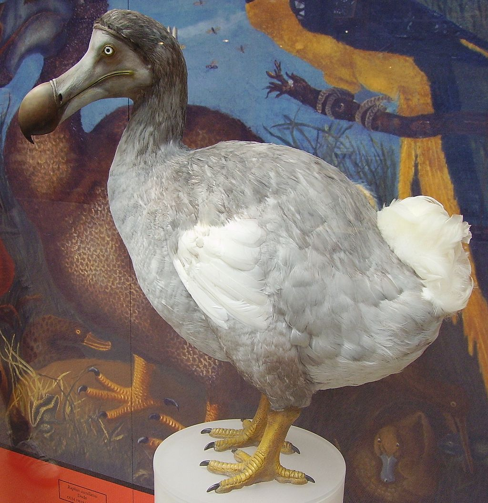
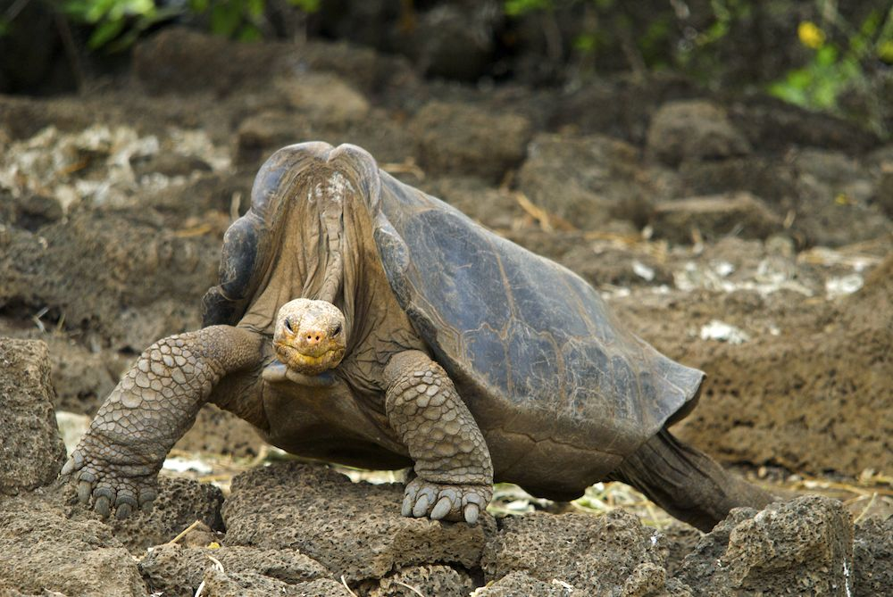
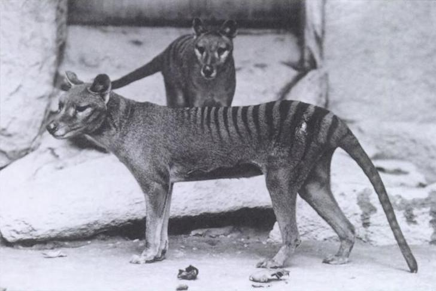

Dodo
Nombre científico Raphus cucullatus, habitaba en los bosques de la isla Mauricio en África, era un ave no voladora que medía 1 metro y pesaba entre 9 a 17kg aproximadamente, se descubrió en 1574 por unos colonizadores portugueses los cuales introdujeron nuevas especies que no eran parte de su ecosistema y los cazaron lo que provoco extinción alrededor de 1690.
Tortuga pinta
Tortuga gigante pinta: Nombre científico Chelonoidis abingdonii, habitó la isla Pinta de islas Galápagos, Ecuador, descrita por primera vez en 1877, la introducción de animales que disminuyeron su alimento y la caza indiscriminada provocaron su extinción en el año 2012 donde luego de muchos esfuerzos por tratar de repoblar esta especie de tortuga muerte “El solitario Jorge” quien vivió aproximadamente 120 años y fue el último macho conocido de su especie.
Tigre de Tasmania
Nombre científico Thylacinus cynocephalus, conocido como lobo de Tasmania, habitó en Australia, Tasmania y Nueva Guinea, mencionado por primera vez en arte rupestre unos 1000 años a. C., podía medir entre 100 y 180 cm de longitud , incluyendo la cola y pesaban entre 20 y 30 Kg. Se extinguió en Australia debido a los Dingos su principal depredador y en Tasmania a causa de la caza indiscriminada para 1930, su último espécimen llamado “Benjamín” murió en un zoológico en 1936.